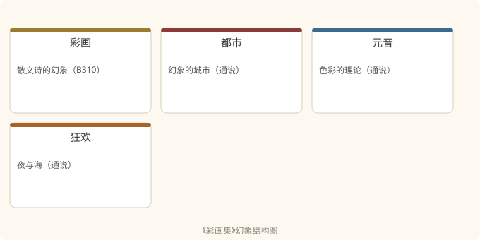

彩画集
一、基本信息
| 作者 | 阿尔蒂尔·兰波 |
|---|---|
| 成书/出版 | 1872-74年写（Britannica B310：Illuminations——40 prose poems + 2 free-verse poems，1872—74年写） Arthur Rimbaud — Encyclopaedia Britannica（百科全书） |
| 国别/地区 | 法国 |
| 时代 | 近代 · 19世纪70年代 |
| 体裁 | 散文诗集 |
| 语言 | 法语 |

《彩画集》幻象结构图（主题·结构图）
二、创作背景
Britannica（B310）：Illuminations——'40 prose poems + 2 free-verse poems，1872—74年写'。
Britannica（B310）：兰波——《地狱一季》(B310)作者——交叉。
题材（通说待核）：《都市》《海港》等散文诗的'彩画'——城市的幻象集。
三、内容脉络
（通说待核）散文诗的'彩画'：都市、海港与'狂欢'。
（通说待核）'Vowels'（元音）色彩论的延伸（通说待核）。
四、主要人物表
| 人物 | 身份 | 说明 |
|---|---|---|
| 幻象者'我' | 通灵者 | （B310 语系） |
五、主题与艺术特点
- 散文诗的'彩画'（B310：Illuminations）。
- 都市幻象（通说待核）。
- '元音'的色彩（通说待核）。
六、影响与评论
- Britannica：'40 prose poems + 2 free-verse poems'（B310）。
Arthur Rimbaud — Encyclopaedia Britannica（百科全书） - Britannica：兰波《地狱一季》并列（B310 交叉）。
Arthur Rimbaud — Encyclopaedia Britannica（百科全书）
七、阅读建议
难点
- 散文诗的断片。
- '彩画'的词源（Illuminations）。
- 《彩画集》中译名（《灵光集》）待核。
- 法文原版（公有领域）。
兰波收官；与《地狱一季》对读。
八、待核实
- 篇目（《都市》《海港》说）核对（通说）。
- 1886年出版（La Vogue刊说）待核。
- 魏尔伦的整理角色待核。